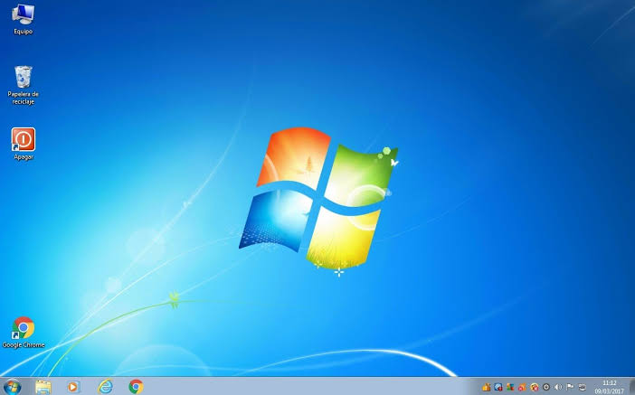
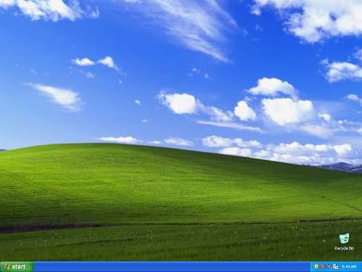

Classic Operating Systems

Windows 7
Released in 2009, Windows 7 became one of Microsoft's most popular operating systems thanks to its speed, stability and ease of use.
Learn More
Windows XP
Released in 2001, Windows XP became one of the most iconic operating systems ever created and remained popular for many years.
Learn More